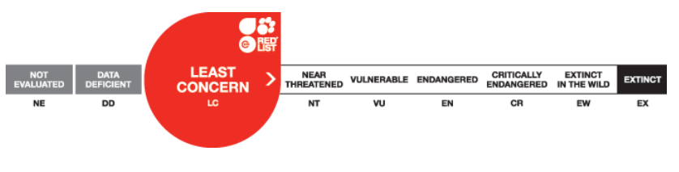

Perlica sępia
Acryllium vulturinum
Rząd:grzebiące
Rodzina:perlice
Charakterystyka

Żyje w stadach. Żeruje na ziemi, wygrzebując silnymi nogami nasiona, pędy I kłącza. Żywi się także owadami, ślimakami, jaszczurkami i żabami. Lata rzadko, w razie zagrożenia. Nocują na gałęziach drzew.Jeden z najpiękniej ubarwionych ptaków afrykańskich. Największy gatunek perlic. Obie płcie są do siebie podobne, samiec jest większy.
Tryb życia

Żyje w stadach. Żeruje na ziemi, wygrzebując silnymi nogami nasiona, pędy I kłącza. Żywi się także owadami, ślimakami, jaszczurkami i żabami. Lata rzadko, w razie zagrożenia. Nocują na gałęziach drzew.
Rozmnażanie

Gatunek jest monogamiczny. Buduje gniazda w zagłębieniach ziemi, ukryte wśród gęstej roślinności lub skał. Jaja znoszone są przez kilka dni i tylko samica je wysiaduje. Pisklęta są zagniazdownikami, czyli opuszczają gniazdo bardzo wcześnie, niemal natychmiast po wylęgu.
Zasięg i siedlisko
Suche i półsuche tereny trawiaste z krzewami.
Ochrona

Zagrożenia: Polowania na nielegalny handel.